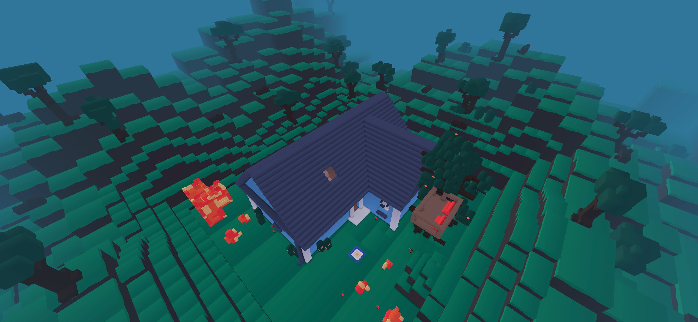

Blue House

← Back to Maps
→ Snow Blue House
The Blue House is one of the main 3 maps in Yeeps Hide and Seek. It was one of the first ever maps added. If you have played in this map back in Yeeps 1.0, you know how Iconic this map is to the game! If you haven't played in this map, you seriously need to play in this map